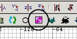

|
Ok we have a floor, let's add a wall.
In the 2D view make sure we have the top
down view, and draw a rectangle next to one
side of the floor. Don't worry about
whatever texture gets used at the moment.
Press ctrl+tab twice so we are looking down
the length of the (currently very short)
wall.
Lift it so that the bottom edge of the wall
touches the top edge of the floor. (Click
inside the selected area and drag up).
Make the wall higher by putting the cursor
above the selected area and dragging
upwards.
Ok we have a serviceable wall. Now
caulk it.
 and press ESC to deselect the
brush.
As we are going to see only the inside of
the room, we only need to texture the inner
wall.
I am going to use a drab stone effect: click
Textures, Town, Town Wall. We get the
town wall textures shown.
In the 3D window, select the inner wall face
(ctrl+shift+click) and click on texture
town_c61a and press ESC to deselect the
face.
Now make sure the 2D is topdown, and select
the wall brush (shift+click).
To duplicate a selection: press SPACE
BAR.
We want to rotate the new wall 90 degrees
around the Z axis. Press the button
shown, to do this.
In the 2D window, drag the newly rotated
wall against the right edge of the floor.
Duplicate the new wall, rotate 90 degrees
again, and drag it to the bottom edge of the
floor.
Duplicate the new wall, rotate 90 degrees
again, and drag it to the left edge of
the floor.
Press ESC to deselect.
Now we just need a ceiling.
 Be aware that in the 2D view when you
try to select a brush, Radiant will
select the uppermost brush you click on,
if there is more than one under your
cursor. This can be misleading, as
you can believe you have selected the
floor when actually you have selected
the ceiling. Another method of
selecting is to repeatedly use
shift+alt+click, which will drill down
through each brush under your cursor,
selecting one after the other.
Be aware that in the 2D view when you
try to select a brush, Radiant will
select the uppermost brush you click on,
if there is more than one under your
cursor. This can be misleading, as
you can believe you have selected the
floor when actually you have selected
the ceiling. Another method of
selecting is to repeatedly use
shift+alt+click, which will drill down
through each brush under your cursor,
selecting one after the other.
|
Select the floor, press ctrl+tab to get a
side 2D view, and duplicate the floor.
Move it to the top of the walls, then caulk
it.

Deselect it. Move your 3D viewpoint
inside the room and look at the ceiling face
- select it with ctrl+shift+click.
We'll give it a sky effect. Sky
textures provide light, so we won't need to
put explicit light sources in the room.
Click Textures/Fueldump and pick the
FuelDumpSky texture.
Deselect the face - you have made a small
room with a sky ceiling.
|
We will put the player inside the
room. He will only be able to see
the inside of the room. The sky is
actually a ceiling. Everything
outside the room is in the volume space
called void. You must ensure when
making a map that the player could never
trace a path to the void. That is,
the 3D space that encloses the players
must be airtight, with no gaps that lead
to the void, even if a player could
never see it. If you do, your map
compile will fail with a "Map is
leaked" error msg.
|
|